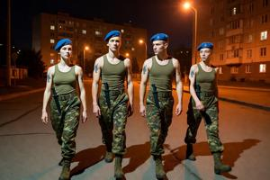
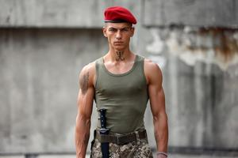
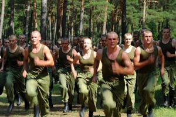
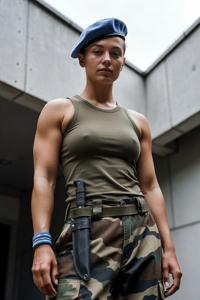
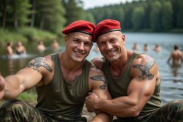
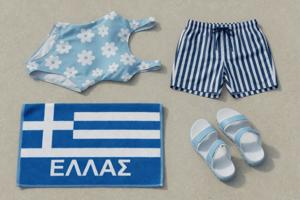

Спремники
{kind=link}

Спремники (букв. «готовые», «те, кто наготове»; ед. ч. муж. — спремник, жен. — спремница) — военизированная националистическая молодёжная субкультура Бывшей Верхней Паннонии, делящаяся на згурскую и деглянскую ветви. Она зародилась в позднесоциалистический период, достигла расцвета во время гражданской войны 1992–1995 годов и в первые годы после неё, а примерно с 2005 года пошла на убыль, уступая городскую улицу субкультуре седмаков.
Происхождение
Спремники берут начало из двух взаимосвязанных источников периода позднего социализма: официальных военизированных молодёжных организаций и футбольного фанатского движения.
Официальные структуры, в том числе подростковая организация «Будущие партизаны», сочетали политическую подготовку с физическими тренировками, полевыми навыками и строевой муштрой. От системы «Домов детства» — государственных детских домов, приучавших целое поколение к жизни в закрытой общине, — они унаследовали и традиции коллективного быта, и коллективную дисциплину. По мере того как коммунистический режим слабел в 1980-е годы, эти организации сохраняли структуру, но их идеологическое содержание выхолащивалось. Освободившееся место занял этнический национализм.
Фанатское движение было менее институциональным, но не менее значимым для становления субкультуры. Фанатские группировки при згурском «Соколе» и деглянском «Динамо» дали будущим спремникам опыт стадионных драк, цветовую символику и территориальную дисциплину. Всё это нарождающаяся субкультура впитала и довела до предела. Параллельно у згурцев и деглян действовали неформальные бойцовские клубы, также поставлявшие новых членов.
Термин «спремники» встречается у деглян и згурцев с конца 1980-х годов. К 1992 году, когда началась гражданская война, субкультура уже настолько окрепла, что поставляла организованные, обученные кадры обеим враждующим сторонам.
Внешний вид
{kind=link}

Внешность спремников строго унифицирована — это вопрос коллективной дисциплины, а не личного стиля. И мужчины, и женщины стригутся коротко или бреются наголо; носят берет под уставным углом, обтягивающую оливковую майку, камуфляжные брюки военного образца и тяжёлые ботинки; аксессуары — в национальных цветах общины: сине-белые у деглян, красно-белые у згурцев. Открыто носимый боевой нож на поясе обязателен. Тело обычно покрыто татуировками с национальной символикой (згурский сокол, деглянский муфлон, глаголические буквы З или Д), девизами и эмблемами конкретных группировок.
Образ жизни
{kind=link}

Личный режим спремника аскетичен. Список запрещённых веществ абсолютен: алкоголь, табак, наркотики и любые стимуляторы, включая энергетики. Физическая форма открыто провозглашается как коллективная ценность: и мужчины, и женщины регулярно занимаются боевыми искусствами, бегом на длинные дистанции и гимнастикой, и всем полагается иметь развитую мускулатуру.
Внутри общины практикуется и поощряется коллективный нудизм для обоих полов (нем. Freikörperkultur, «культура свободного тела»). Это строго внутреннее дело: перед посторонними нагота никогда не выставляется напоказ. Посторонний наблюдатель, впервые столкнувшийся с этим сочетанием — воинственная внешность, ножи, националистическая символика и коллективные тренировки в обнажённом виде, — обычно испытывает когнитивный диссонанс. Сами спремники никакого противоречия не видят и ссылаются на Спарту как на исторический прецедент. Настоящий же корень явления куда прозаичнее: коммуны «миляничей» в Домах детства жили по схожим нормам коллективного физического быта по идеологическим и чисто практическим причинам, а ранние спремники — многие из которых вышли именно из этих учреждений — унаследовали эти нормы вместе с прочими.
Идеология
Спремников нередко называют неонацистами. Сами они это определение отвергают, и в их аргументации есть резон — хотя если присмотреться, нельзя сказать, что она опровергает обвинение полностью.
Национализм спремников этнический, а не расистский в классическом смысле. Врага определяет принадлежность к другой паннонской народности, а не какое-либо физическое отличие — хотя бы потому, что згурцы и дегляне внешне неотличимы друг от друга. К неславянским меньшинствам — цыганам, евреям, мусульманам — относятся с подозрением или тихой неприязнью, но они не главный идеологический враг, и организованное насилие против них спремникам не свойственно. Канонический враг — это другая паннонская народность: для деглянских спремников это згурцы, для згурских — дегляне.
Эта вражда упирается в практическую проблему. Полиция ООН систематически не пускает в Нейтральную зону людей с узнаваемыми внешними чертами спремников — в первую очередь с татуировками — без каких-либо дополнительных объяснений. Деглянский спремник, который хотел бы сойтись лицом к лицу со своим згурским противником, на практике натыкается именно на эту институционально-географическую преграду. Поэтому реальным врагом на улице оказывается седмак той же национальности: его недисциплинированный образ жизни в глазах спремника — это как раз тот изъян национального характера, для исправления которого субкультура и существует. Столкновения между ними бывают весьма энергичными.
Гендер и сексуальность
Подход спремников к вопросам гендера и сексуальности неизменно поражает сторонних наблюдателей и плохо вяжется с неонацистскими параллелями.
{kind=link}

Женщины — полноправные члены группировок спремников, без формального различия по роли или званию. Они тренируются наравне с мужчинами, проходят те же физические испытания и занимают руководящие позиции в структуре группы. Официальное объяснение простое: в национальной борьбе важен каждый дееспособный человек. Неформальное общение между спремниками и спремницами, по меркам похожих субкультур в других странах, ведётся вполне на равных. Скорее всего, эти установки восходят к армии НРВП, где воинская повинность была обязательной и для мужчин, и для женщин.
{kind=link}

Однополые отношения как между мужчинами, так и между женщинами в субкультуре принимаются без осуждения и без каких-либо организационных санкций. Дело вовсе не в прогрессивных взглядах: спремники не имеют ничего общего с ЛГБТ-субкультурой и, как правило, презирают её. Это ещё одна спартанская черта — тесные узы между бойцами считаются полезными для боевого духа. Ссылаются также на прецедент «миляничей», и не без оснований: в коммунах мальчиков долгое время держали отдельно от девочек, что дало соответствующие результаты — скорее в силу обстоятельств, чем по идейным соображениям.
Таким образом, выросла субкультура, агрессивно националистическая внешне и — по региональным меркам — довольно либеральная внутренне.
Запреты на бренды
Стандартные згуро-деглянские цветовые табу спремники соблюдают строже, чем остальное население. Деглянские спремники отказываются от любого товара, снаряжения или предмета одежды с красно-белой расцветкой; згурские спремники применяют аналогичный запрет к сине-белой. Ограничение распространяется не только на потребительские товары, но и на боевое снаряжение, рукояти инструментов, ремни и даже цифровые интерфейсы. Полный перечень запрещённых брендов — спортивная одежда, сети быстрого питания, технологические компании — совпадает с общей згуро-деглянской системой и соблюдается без исключений. В противоположность седмакам, аскетичный образ жизни полностью исключает приверженность каким-либо брендам алкоголя, табака и энергетиков.
Отношения с гражданскими
{kind=link}

Отношения спремников с гражданским населением собственной народности всегда двойственны, и эта двойственность носит структурный, а не случайный характер.
Спремники считают нарушение культурного кодекса делом коллективным, а не частным. Кафе или ларёк, уличённый в продаже товаров неправильной расцветки — «Кока-колы» в деглянской зоне или печенья «Орео» в згурской, — ждёт визит, в ходе которого запрещённый товар изымут или уничтожат, если хозяин не успеет сделать это сам. О визите, как правило, не предупреждают заранее. Те, кому уже нанесли один визит, обычно не нуждаются во втором.
В то же время именно спремники, где они присутствуют, служат самой надёжной физической защитой от седмаков. Седмаки часто пристают к прохожим, совершают всякого рода нападения и спонтанные преступления; официальные власти реагируют не всегда. Спремники реагируют всегда. Увидев, как седмаки преследуют или нападают на женщину, спремники защитят её и не будут церемониться с седмаками. Эту функцию ценят даже те гражданские, что в остальном не испытывают к субкультуре никакой симпатии.
В итоге складывается общепринятое, но редко высказываемое вслух отношение к спремникам: их терпят ради их полезности, недолюбливают как источник опасности, и в конкретных практических ситуациях к ним прислушиваются даже те, кто обычно склонен отмежёвываться от них.
Упадок и нынешнее положение
Спремники были наиболее многочисленны и влиятельны во время гражданской войны и около десяти лет после перемирия 1995 года. Практический спрос на организованную, идейную молодёжь, готовую взяться за оружие, достиг пика именно в войну; в последующие годы субкультуру поддерживал замороженный территориальный конфликт — особенно в деглянской зоне после переворота 1999 года и введения бессрочного военного положения.
Примерно с 2005 года спремники начали сдавать позиции: их теснила набиравшая силу субкультура седмаков, которая давала городской молодёжи узнаваемую идентичность без пищевых, физических, идеологических и организационных требований, обязательных для спремников. К тому же седмаки со временем заняли свою нишу в музыке, ночной жизни и уличной торговле — там, где спремники в силу собственной идеологии присутствовать не могли. Спремники всегда неявно определяли себя как военное формирование чрезвычайного времени; когда перемирие стабилизировалось, оправдывать непрерывный набор новых членов стало труднее.
Субкультура продолжает существовать в обеих зонах, и её влияние заметно превосходит её реальную численность. Ряд националистических политических организаций и ветеранских объединений по сути остаются группами повзрослевших спремников и сохраняют их ценности, теперь уже в институциональной форме. Военная академия Деглянской Республики, размещённая в бывшем Доме детства, готовит будущих офицеров в условиях, во многом родственных субкультуре спремников, — и эту преемственность обе стороны считают вполне естественной.
Категории: Культура, Повседневная жизнь, Национализм, Субкультуры